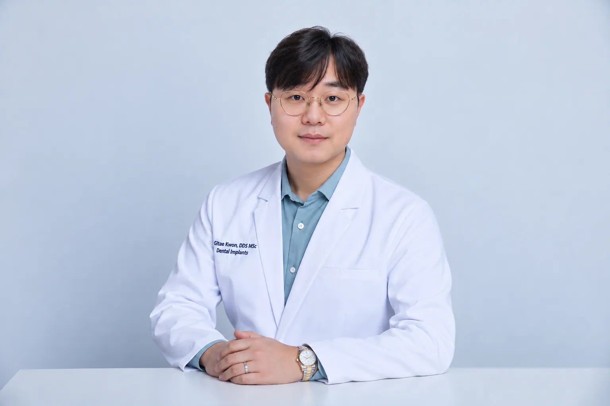

Dr. GiTae Kwon, DDS MSc
Implant surgeon and educator
Dr. Kwon focuses on dental implant surgery, smile makeovers, full-mouth reconstruction and All-on-X treatment. He graduated summa cum laude from New York University, earned his DDS at NYU College of Dentistry, and in 2023 completed a Master's degree in Dental Implantology and Advanced Surgical Extractions at the University of Camillus in Rome, where he is a visiting professor.
He teaches implant surgery to other dentists as part-time faculty at the Gangnam International Implant Academy and lectures across North and Central America.